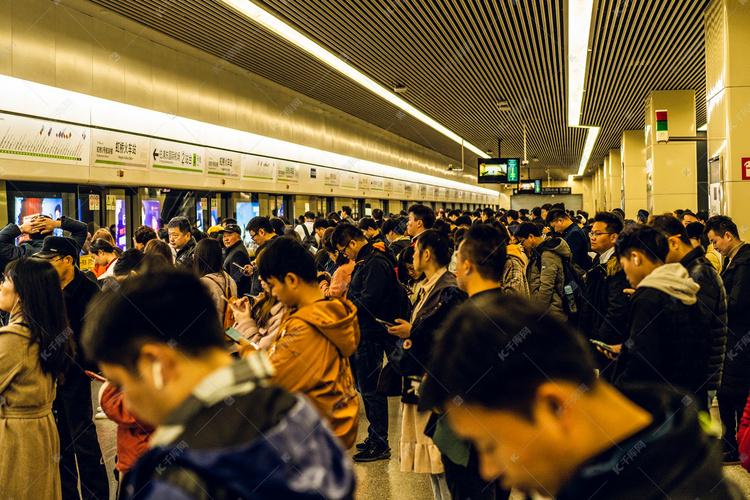

春节假期结束，又到了春节返工的关键时刻。这个阶段，人们纷纷告别家乡，奔赴工作岗位，迎来一波大规模的人员流动。
在这个熙熙攘攘的返程潮中，流感病毒也在悄然“觊觎”，随时准备寻找新的宿主。
春节返工流感高发原因
1、人员密集流动
春节返工期间，火车站、汽车站、机场到处都是行色匆匆的旅人。狭小且密闭的车厢、候机大厅里，挤满了归心似箭的人群。
在这样的环境中，空气流通本就不畅，一旦有流感患者置身其中，病毒就会随着他们的咳嗽、打喷嚏，以飞沫的形式迅速扩散，周围的人稍不留意，就可能被感染。
2、免疫力下降
春节假期的生活节奏和日常大不相同，走亲访友、聚会聚餐频繁，很多人难免熬夜、暴饮暴食，作息变得极不规律。
过度的娱乐和劳累，让身体不堪重负，免疫力也随之下降。经过这样的假期，身体抵御病毒的能力减弱流感病毒就更容易趁虚而入。
春节返工应对流感措施
1、返工途中防护
1.交通工具防护：在乘坐公共交通工具时，务必全程佩戴口罩，最好选择医用外科口罩或 N95 口罩。口罩能有效阻挡病毒飞沫，降低感染风险。
同时，尽量避免触摸公共物品，如扶手、座椅等。如果不小心触摸了，不要用手触摸口鼻，应尽快用洗手液或酒精湿巾清洁双手。
2.办公场所防护：返工后，办公室人员密集，要保持室内通风换气，每天至少通风 2-3次，每次 30分钟左右。与同事交流时尽量保持一定距离，减少面对面长时间交谈。
2、恢复健康生活作息
1.规律作息：调整作息时间，保证每天有充足的睡眠时间，成年人一般需要7-8小时，儿童和青少年需要更多。早睡早起，避免熬夜，让身体得到充分的休息，有助于恢复和提高免疫力。
2.合理饮食：节后饮食要清淡一些，多吃蔬菜水果,保证营养均衡。避免过多食用油腻、辛辣、刺激性食物，减轻肠胃负担。
可以多吃一些富含维生素C的水果，如橙子、柠檬等，有助于增强免疫力。
春节返工是流感防控的关键时期，只要我们做好防护措施，保持健康的生活方式，就能有效预防流感，以健康的状态迎接新一年的工作和生活。
免责声明：本文章来源浙大二院微信公众号，如转载内容涉及版权等问题，请立即联系小编，我们将迅速采取适当的措施。